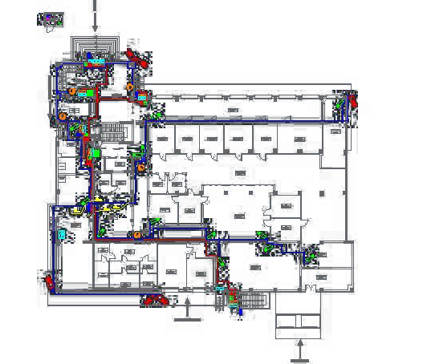

Hello world, my name is Tony Tran.
I am a software engineer looking for any opportunities to perfect my craft. This is kind of a gateway to what I am all about. Everything from my the projects at my current position, to side projects I am working on, to other interests I have. The site is currently under construction (please ignore the buggy links), but in the mean time, if you're interested, please look at my resume here and my github hereCourtesy of the Louvre in France
Navy Research and Development
My current position is a Java software engineer for an Echelon II organization within the Navy. This position entails being a part of team that is giving a piece of legacy software a complete makeover. What was once a bloated J2EE application that required dedicated hardware has turned into a lightweight RESTful based web application.
The most notable pieces of this new software I have created include the Jersey 2 Restful foundation, basic data storage service, XML database subsystem, as well as the Client API. Many of subsystem prototypes can be found on my git hub here. Additionally, another part of the project that has gone through a complete makeover, is the development process. We have converted from Waterfall development to a full on Agile development process. Because I took on a lot of responsibility creating a good deal of subsystems within the web application, I became the co-leader for one of the five scrum teams.
The video below is an example of the Server Sent Event prototype I created. The video demonstrates an example of how the client can receive progress for the service they execute.
The intention of this code was to provide my team members a general outline of how to create a project that would take advantage of the server side events (also why the code is very raw). The premise for this prototype was that our web application needed a way to update the clients the progress of the service they executed. Being that a task can take up to several minutes, we did not want the user to wait around and become blocked from executing other services. Server sent events allows the user to continue with other services while their initial task finish executing and at the same time receive updates.
Freelance Web Design
Outside of my full-time position at the Navy, I create websites for customers on the side. I started out helping friends create site for their businesses (only cause I had some HTML experience and I wanted to learn more) and through word of mouth from friends, this slowly progressed to creating sites for people in need (IE for businesses, portfolios, films, etc) of sites. The following are the most notables sites I recently created: www.sonofabarman.com www.elizazerehi.com
Majority of the sites I create, take advantage of the Twitter's front-end framework, BootStrap (though I have used Foundation too), as well as many existing libraries built on jQuery such as Flexslider and Fancybox.
As most people who have programmed know, once you know a programming language, picking another programming language isn't too difficult. For this reason, even though I very rarely program with JavaScript I was still able to pick it up very quickly. I don't claim to be an expert on JavaScript, but I can figure out how to effective create things when needed. Below is a video of a custom jQuery design I created for a realtor's site.
The video demonstrates a couple features from the BootStrap that can be used only separately (the components conflict with each other). The user clicks on the image link that opens a up a modal. Within that modal, there is a carousel for images. I wanted to created a way for users to click on a link to see featured properties without requiring them to leave the home page. Because of that need, I figured out a way combine BootStrap's modal component with BootStrap's carousel component along with another custom function to display a featured image. The client ended up really liking this feature.
Aronson Security
This was my first engineering opportunity after graduating from the University of Washington. It is sort of a tangent to what I do currently as it was more hardware knowledge based, but it got my engineering feet wet.
Aronson Security was a major player for designing and installing security systems in the North West. The most prolific customers we designed security systems for was Microsoft and Amazon. My position as a Design Engineer here required me to become familiar with the security hardware such as CCTV cameras, card readers, and wiring panels. From there, the design engineer team would design a security system for the building and then draw in AutoCad a security system blue print along with wiring instructions for the technicians to use to install. Below is an AutoCad example of one view of the security system. 